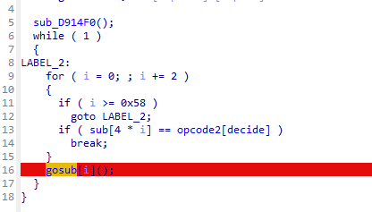

02
April
April
VM
vm
vm本质就是通过代码来实现汇编代码，可能这么说有点抽象。但是本意就是表达vm通过一系列的操作码来实现自己的汇编代码语句
那么我们的第一件事就很显而易见了，就是找到我们的vm操作码。我们通过分析函数，来判断执行的是什么汇编语句。
最后再编写解释器，分析我们的汇编代码即可
实战
可以很明显的看到opcode和我们的一个函数选择，我们dump出我们的opcode即可
我们分析我们的函数功能，发现我们的opcode以3个为一组，第一个确定指令，第二个与第三个决定寄存器或者立即数
函数分析结果如下
0:'pcadd',1:'mov',2:'push',3:'?',4:'pop',5:'caseprint',6:'add',7:'sub1',8:'mul',9:'div',10:'xor',11:'jmp',12:'subcmp',13:'jedx4',14:'jnedx4',15:'jedx4orlow',16:'jedx4orhight',17:'input',18:'?2',19:'LoadStack',20:'LoadString',0xFF:'end'
通过opcode以及分析出来函数名称写出脚本
#include
int main()
{
char opcode[] = { 0x01, 0x03, 0x03,
0x05, 0x00, 0x00, 0x11, 0x00, 0x00,
0x01,0x01, 0x11,
0x0C, 0x00, 0x01,
0x0D, 0x0A, 0x00,
0x01, 0x03, 0x01,
0x05, 0x00, 0x00,
0xFF, 0x00, 0x00,
0x01, 0x02, 0x00,
0x01, 0x00, 0x11,
0x0C, 0x00, 0x02,
0x0D, 0x2B, 0x00,
0x14, 0x00, 0x02,
0x01, 0x01, 0x61, 0x0C, 0x00, 0x01, 0x10, 0x1A,
0x00, 0x01, 0x01, 0x7A, 0x0C, 0x00, 0x01, 0x0F, 0x1A, 0x00,
0x01, 0x01, 0x47, 0x0A, 0x00, 0x01, 0x01, 0x01, 0x01, 0x06,
0x00, 0x01, 0x0B, 0x24, 0x00, 0x01, 0x01, 0x41, 0x0C, 0x00,
0x01, 0x10, 0x24, 0x00, 0x01, 0x01, 0x5A, 0x0C, 0x00, 0x01,
0x0F, 0x24, 0x00, 0x01, 0x01, 0x4B, 0x0A, 0x00, 0x01, 0x01,
0x01, 0x01, 0x07, 0x00, 0x01, 0x01, 0x01, 0x10, 0x09, 0x00,
0x01, 0x03, 0x01, 0x00, 0x03, 0x00, 0x00, 0x01, 0x01, 0x01,
0x06, 0x02, 0x01,
0x0B, 0x0B, 0x00, 0x02, 0x07, 0x00, 0x02,
0x0D, 0x00, 0x02, 0x00, 0x00, 0x02, 0x05, 0x00, 0x02, 0x01,
0x00, 0x02, 0x0C, 0x00, 0x02, 0x01, 0x00, 0x02, 0x00, 0x00,
0x02, 0x00, 0x00, 0x02, 0x0D, 0x00, 0x02, 0x05, 0x00, 0x02,
0x0F, 0x00, 0x02, 0x00, 0x00, 0x02, 0x09, 0x00, 0x02, 0x05,
0x00, 0x02, 0x0F, 0x00, 0x02, 0x03, 0x00, 0x02, 0x00, 0x00,
0x02, 0x02, 0x00, 0x02, 0x05, 0x00, 0x02, 0x03, 0x00, 0x02,
0x03, 0x00, 0x02, 0x01, 0x00, 0x02, 0x07, 0x00, 0x02, 0x07,
0x00, 0x02, 0x0B, 0x00, 0x02, 0x02, 0x00, 0x02, 0x01, 0x00,
0x02, 0x02, 0x00, 0x02, 0x07, 0x00, 0x02, 0x02, 0x00, 0x02,
0x0C, 0x00, 0x02, 0x02, 0x00, 0x02, 0x02, 0x00, 0x01, 0x02,
0x01, 0x13, 0x01, 0x02, 0x04, 0x00, 0x00, 0x0C, 0x00, 0x01,
0x0E, 0x5B, 0x00, 0x01, 0x01, 0x22, 0x0C, 0x02, 0x01, 0x0D,
0x59, 0x00, 0x01, 0x01, 0x01, 0x06, 0x02, 0x01, 0x0B, 0x4E,
0x00, 0x01, 0x03, 0x00, 0x05, 0x00, 0x00, 0xFF, 0x00, 0x00,
0x01, 0x03, 0x01, 0x05, 0x00, 0x00, 0xFF, 0x00, 0x00, 0x00 };
int decide = 0, decide_print = 0;
int number[10];
for (int i = 0; i < 280; i++)
{
printf("%d ", decide/3);
switch (opcode[decide])
{
case 0:
printf("eip++\n");
decide++;
break;
case 1:
printf("mov reg[%d],0x%x\n", opcode[decide + 1], opcode[decide + 2]);
decide += 3;
break;
case 2:
printf("push %d \n", opcode[decide + 1]);
decide += 3;
break;
case 3:
printf("push reg[%d] \n",opcode[decide+1]);
decide += 3;
break;
case 4:
printf("pop reg[%d] \n", opcode[decide + 1]);
decide += 3;
break;
case 5:
printf("printf something\n");
decide += 3;
break;
case 6:
printf("add reg[0x%x],reg[0x%x]\n",opcode[decide+1],opcode[decide+2]);
decide += 3;
break;
case 7:
printf("sub reg[0x%x],reg[0x%x]\n", opcode[decide + 1], opcode[decide + 2]);
decide += 3;
break;
case 8:
printf("imul reg[0x%x],reg[0x%x]\n", opcode[decide + 1], opcode[decide + 2]);
decide += 3;
break;
case 9:
printf("div reg[%d],%d\n",opcode[decide+1],opcode[decide+2]);
decide += 3;
break;
case 10:
printf("xor reg[0x%x],reg[0x%x]\n", opcode[decide + 1], opcode[decide + 2]);
decide += 3;
break;
case 11:
printf("jmp %d\n", opcode[decide + 1] - 1);
decide +=3;
break;
case 12:
printf("cmp reg[%d],reg[%d]\n", opcode[decide + 1], opcode[decide + 2]);
decide_print = 1;
decide += 3;
break;
case 13:
printf("je %d\n", opcode[decide + 1] - 1);
decide += 3;
break;
case 14:
printf("jne %d\n", opcode[decide + 1] - 1);
decide += 3;
break;
case 15:
printf("jg %d\n", opcode[decide + 1] - 1);
decide += 3;
break;
case 16:
printf("jl %d\n", opcode[decide + 1] - 1);
decide += 3;
break;
case 17:
printf("get \n");
decide += 3;
break;
case 18:
printf("memset reg[0x%x],0x%0x\n",opcode[decide+1], opcode[decide + 2]);
decide += 3;
break;
case 19:
printf("exchange reg[0x%0x],stack[0x%x]\n", opcode[decide + 1], opcode[decide + 2]);
decide += 3;
break;
case 20:
printf("loadstring reg[%d],input[%d]\n", opcode[decide + 1], opcode[decide+2]);
decide += 3;
break;
default:
printf("exit\n");
decide += 3;
break;
}
}
}
运行获取汇编代码
0 mov reg[3],0x3
1 printf something
2 get
3 mov reg[1],0x11
4 cmp reg[0],reg[1]
5 je 9
6 mov reg[3],0x1
7 printf something
8 exit
9 mov reg[2],0x0
10 mov reg[0],0x11
11 cmp reg[0],reg[2]
12 je 42
13 loadstring reg[0],input[2]
14 mov reg[1],0x61
15 cmp reg[0],reg[1]
16 jl 25
17 mov reg[1],0x7a
18 cmp reg[0],reg[1]
19 jg 25
20 mov reg[1],0x47
21 xor reg[0x0],reg[0x1]
22 mov reg[1],0x1
23 add reg[0x0],reg[0x1]
24 jmp 35
25 mov reg[1],0x41
26 cmp reg[0],reg[1]
27 jl 35
28 mov reg[1],0x5a
29 cmp reg[0],reg[1]
30 jg 35
31 mov reg[1],0x4b
32 xor reg[0x0],reg[0x1]
33 mov reg[1],0x1
34 sub reg[0x0],reg[0x1]
35 mov reg[1],0x10
36 div reg[0],1
37 push reg[1]
38 push reg[0]
39 mov reg[1],0x1
40 add reg[0x2],reg[0x1]
41 jmp 10
42 push 7
43 push 13
44 push 0
45 push 5
46 push 1
47 push 12
48 push 1
49 push 0
50 push 0
51 push 13
52 push 5
53 push 15
54 push 0
55 push 9
56 push 5
57 push 15
58 push 3
59 push 0
60 push 2
61 push 5
62 push 3
63 push 3
64 push 1
65 push 7
66 push 7
67 push 11
68 push 2
69 push 1
70 push 2
71 push 7
72 push 2
73 push 12
74 push 2
75 push 2
76 mov reg[2],0x1
77 exchange reg[0x1],stack[0x2]
78 pop reg[0]
79 cmp reg[0],reg[1]
80 jne 90
81 mov reg[1],0x22
82 cmp reg[2],reg[1]
83 je 88
84 mov reg[1],0x1
85 add reg[0x2],reg[0x1]
86 jmp 77
87 mov reg[3],0x0
88 printf something
89 exit
90 mov reg[3],0x1
91 printf something
92 exit
通过分析汇编代码来还原原来的算法即可
array = [0x7,0xd,0x0,0x5,0x1,0xc,0x1,0x0,0x0,0xd,0x5,0xf,0x0,0x9,0x5,0xf,0x3,0x0,0x2,0x5,0x3,0x3,0x1,0x7,0x7,0xb,0x2,0x1,0x2,0x7,0x2,0xc,0x2,0x2,]
array = array[::-1]
for i in range(0, len(array), 2):
c = array[i] + array[i+1]*16
tmp = (c-1) ^ 71
if tmp >= ord('a') and tmp <= ord('z'):
print(chr(tmp), end = "")
continue
tmp = (c+1) ^ 75
if tmp >= ord('A') and tmp <= ord('Z'):
print(chr(tmp), end = "")
continue
print(chr(c), end = "")
实在不行可以动调查看函数作用